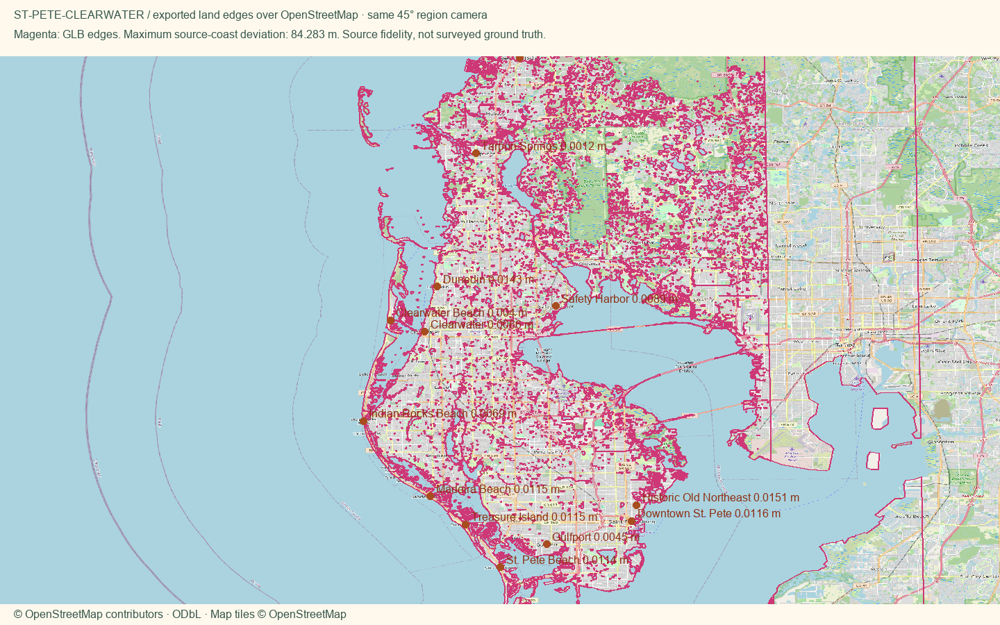

St. Pete and the Clearwater Beaches
Open atlas · Accuracy CSV · Price sources · Validation
3.31 MB region geometry · 84.28 m maximum coastline-to-source difference · 0.0151 m maximum district-anchor serialization difference.
These are OpenStreetMap source-alignment checks, not a survey. Physical-phone loading time remains unverified.
Initial regional download: 3.964 MB. Includes overview geometry, scene metadata and water imagery.
District style recipes · Lossless mesh check · 30A and Tampa preservation · Package integrity
Region
Downtown St. Pete
Historic Old Northeast
St. Pete Beach
All districts
OpenStreetMap overlay

Manual fixes
- Downtown uses the OSM Saint Petersburg place-label point as its representative anchor, not a surveyed district centroid.
- Old Northeast recipe mixes historic porch-house and Mediterranean colors; per-building facade colors are illustrative.
- Expanded inputs to the existing St. Pete/Clearwater catalog towns; retained Downtown and Old Northeast as separate St. Petersburg districts.
- Existing Census land context continues beyond the OSM data rectangle, avoiding artificial water edges at the package boundary.
- Framed the long peninsula by its north/south district extents, with a phone offset that leaves the southern towns above the controls. Buildings and anchors remain at source positions.
- Placed Downtown and Old Northeast first in the St. Pete district choices so Town opens on St. Pete instead of an unrelated northern town.
- The shared exporter needed lossless indexing of repeated overview vertices to meet 4 MB. Every decoded triangle position was compared exactly; Miami was revalidated.